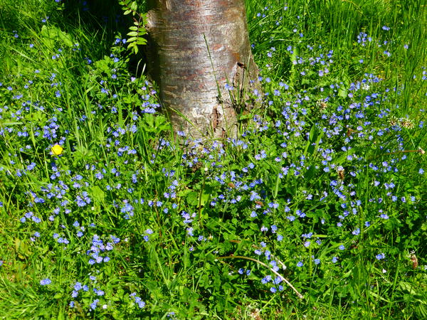

NGSI
Picture Gallery
Wild flower area, Kingston Park
Oxeye daisies, Kingston Park
Tussock grass area, Kingston Park
Meadow with Yellow Rattle, Spital Tongues
Eyebright, Spital Tongues
Burnet Moth on Spear Thistle, Spital Tongues
Cinnabar Moth caterpillars on Ragwort, Spital Tongues
Ladybird pupa on buttercup leaf, Spital Tongues
Meadow Brown on Ragwort, Spital Tongues
Hover Fly on Ragwort, Spital Tongues
Red Legged Shield bug, Spital Tongues
Red Tailed Bumblebee, Spital Tongues
Small Skipper female, Spital Tongues
Cornfield annuals at Hazlerigg, 2015
Germander speedwell at Kingston Park, 2015
Knapweed at Kingston Park, 17.7.15
Rivers of knapweed at Kingston Park, 17.7.15
Yellow rattle, 28.5.15
Yellow rattle seedlings, Spital Tongues, 15.4.15
7-spot ladybird on yellow rattle, Spital Tongues
Wild flower meadow, Spital Tongues, 2015
Blackfly and ants on dock, Spital Tongues, 5.7.15
Cinnabar moth, 29.6.15
Large skipper butterfly on Oxeye daisy, Spital Tongues, 2.7.15
Meadow Brown, Spital Tongues, July 2015
Comma butterfly on creeping thistle, Spital Tongues, 3.8.15
Mowing with friends, Spital Tongues, 2015

Poppy border, Fenham Barracks, 2015
Children's Nature Walk Kingston Park, 13.11.15
Bee Orchid, Spital Tongues plot, 21.6.17

Viewing the wildflower plots 2017
Cleone's award-winning, beautiful, pesticide-free garden, 2019
Narrow Bordered Five Spot Burnet Moth, Spital Tongues, 2019
Scything taster, Spital Tongues, 2019
At the Meadow, mowing by scythe (video, © Charlotte Cook 2019)
Small Skipper, Spital Tongues plot, 26.7.19
Public viewing, Spital Tongues Meadow, 2019
Bee Orchid, Spital Tongues, 2019
Raking up the arisings, Spital Tongues, © Charlotte Cook 2019
Seed-gathering, Spital Tongues, © Charlotte Cook 2019